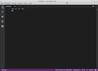

Visual Studio Code
Dieser Artikel wurde für die folgenden Ubuntu-Versionen getestet:
Ubuntu 16.04 Xenial Xerus
Zum Verständnis dieses Artikels sind folgende Seiten hilfreich:
Visual Studio Code  , kurz auch VS Code, ist ein Quelltext-Editor von Microsoft. Er dient vorrangig der Entwicklung von Webanwendungen und ermöglicht laut eigener Angabe die Programmierung bzw. Erstellung von Quelltexten in C++, C#, CSS, Dockerfile, Go, HTML, JavaScript, JSON, Less, Markdown, PHP, Python, Sass, T-SQL und TypeScript.
, kurz auch VS Code, ist ein Quelltext-Editor von Microsoft. Er dient vorrangig der Entwicklung von Webanwendungen und ermöglicht laut eigener Angabe die Programmierung bzw. Erstellung von Quelltexten in C++, C#, CSS, Dockerfile, Go, HTML, JavaScript, JSON, Less, Markdown, PHP, Python, Sass, T-SQL und TypeScript.
VS Code ist keine Entwicklungsumgebung (wie die fast gleichnamige Software Visual Studio).
"Bis auf den Namen und einigen Funktionen wie IntelliSense hat VS Code nichts mit Visual Studio gemeinsam. [...] Im Unterschied zu Visual Studio arbeitet VS Code nicht mit Projektdateien, sondern auf Basis von Codedateien und Ordnern." (Quelle)
Visual Studio Code ist kostenlos, quelloffen und plattformübergreifend für die Betriebssysteme Windows, Mac OS X und Linux (also auch Ubuntu) verfügbar.
Installation¶
 VS Code kann nicht direkt aus den offiziellen Paketquellen installiert werden, sondern muss von der Projektseite als .deb-Paket heruntergeladen und installiert werden [1].
VS Code kann nicht direkt aus den offiziellen Paketquellen installiert werden, sondern muss von der Projektseite als .deb-Paket heruntergeladen und installiert werden [1].
Von Microsoft werden folgende DEB-Pakete angeboten:

Die unterstützten Ubuntuversionen und Architekturen werden aufgelistet. Nachdem man sie für die korrekte Ubuntuversion und Architektur geladen hat, müssen DEB-Pakete noch installiert werden.
Hinweis!
Fremdpakete können das System gefährden.
Bedienung¶

Das Programm kann dann sofort gestartet werden [2]. Bei der Desktop-Oberfläche Unity sucht man nach "Visual Studio Code", im Terminal nutzt man den Befehl code und beginnt dann mit einem selbsterklärenden Einrichtungsfenster. Das Programm wurde für die grafische Bedienung mit Maus und Tastatur entwickelt. Es gibt aber auch Tastenkombinationen und Programmoptionen.
Tastenkürzel¶
Die Steuerung erfolgt oft schneller über Tastenkürzel. Eine Übersicht der wichtigsten Tastenkürzel.
| Kurztasten | |
| Taste(n) | Funktion |
| F11 | Vollbildmodus |
| Strg + K , dann Strg + R | Umfassende Übersicht der Tastenkombinationen (englisch) |
| F1 | Alle Befehle anzeigen |
| Strg +Leertaste | Vorschlagfunktion für Programmiersprachen auslösen |
| Strg + ⇧ + X | Im Online-Store nach Erweiterungen suchen. |
Optionen¶
| Optionen (Auswahl) | |
| Parameter | Bedeutung |
-h | Hilfe (englischsprachig) mit spezielleren Optionsmöglichkeiten (installierte Erweiterungen im Terminal anzeigen usw.) |
--verbose | Ausführliche Ausgabe im Terminal |
-d, --diff | Zwei Dateien vergleichen (es müssen zwei Dateipfade als Optionen eingegeben werden) |
-v, --version | Version anzeigen |
Einstellungen¶
Die Konfiguration von VS Code ist unter dem Eintrag "Datei -> Einstellungen" im Fenstermenü zugänglich. Gespeichert werden diese Einstellungen in der Datei ~/.config/Code/User/settings.json im Homeverzeichnis.
Extensions (Erweiterungen)¶
Für VS Code gibt es inzwischen eine stattliche Anzahl an Extensions (Erweiterungen), die die Programmfunktionalität ergänzen und weitere Sprachen und Entwicklungswerkzeuge unterstützen. So lässt sich das Programm z.B. auch als Markdown-Editor verwenden.
Problembehebung¶
Telemetrie abschalten¶
VS Code übermittelt in der Voreinstellung ungefragt und hinter dem Rücken des Anwenders Informationen über die Nutzung des Programms. Wie man diese Funktion abschaltet, ist in der FAQ unter How to disable crash and telemetry reporting beschrieben.
Links¶
Install Visual Studio Code IDE Easily via Snap
- Blogbeitrag, 05/2017Editoren
 Übersichtsartikel
Übersichtsartikel

- Erstellt mit Inyoka
-
 2004 – 2017 ubuntuusers.de • Einige Rechte vorbehalten
2004 – 2017 ubuntuusers.de • Einige Rechte vorbehalten
Lizenz • Kontakt • Datenschutz • Impressum • Serverstatus -
Serverhousing gespendet von